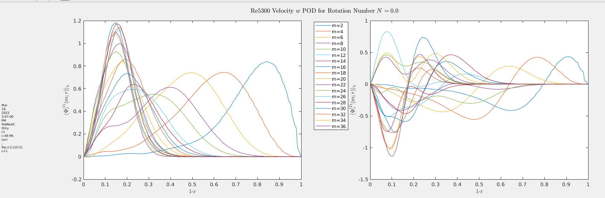
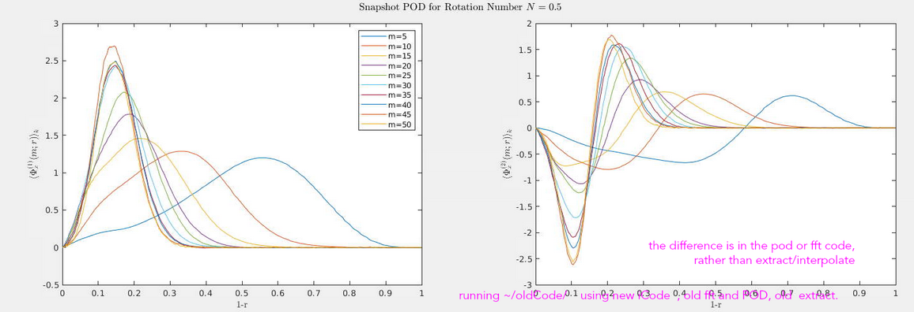
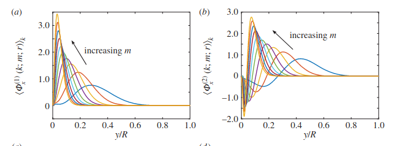
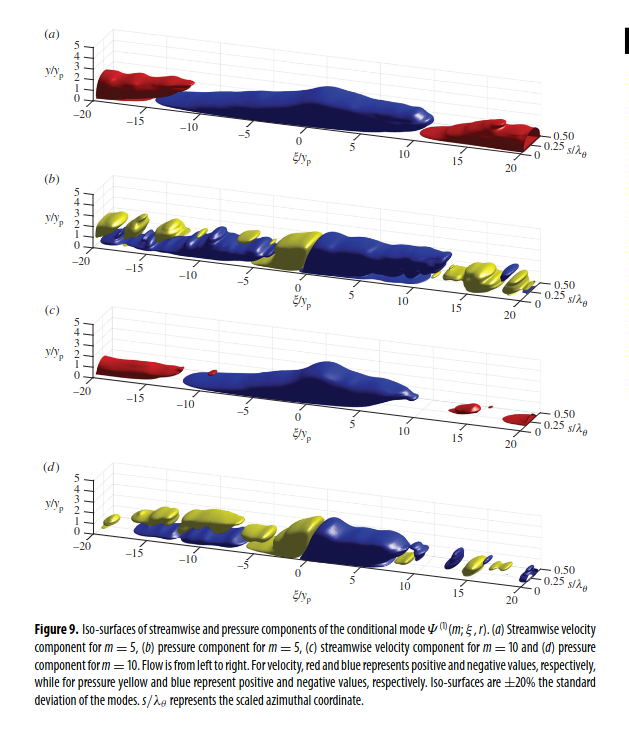
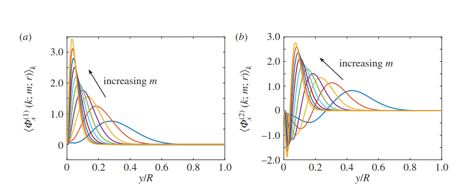
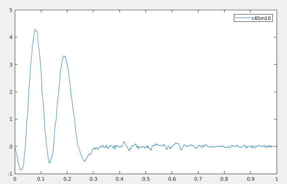
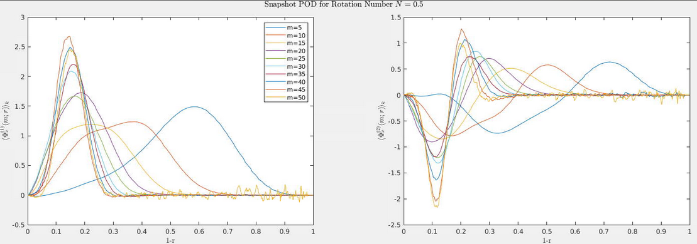
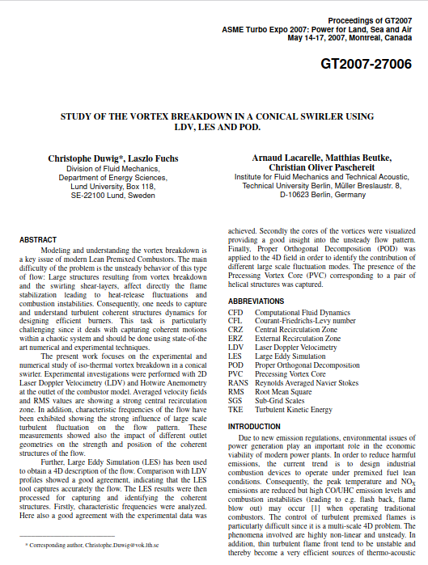
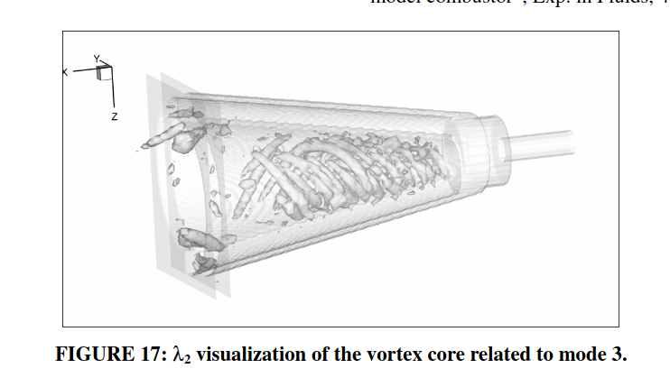

1/06/22 Updates
Swirl Numbers N=0.5,1,3Michael Raba, Msc Candidate
Path
- + *Need data*
- + *full vars* for *larger Re*
- + *Need informed guidance*
- + *Done 1:* Streamlined extract+interpolate
- - Avoids intermediate write to file
- - Write to hdf5
- + *Done 2:* Super good convergence, all data.
- + *Done 3:* Start thesis
Code For Extraction to Interpolate
- Goal: Grab data from Nek python memory, instead of unnecessary file copy.
Py_Initialize();
auto modulePath = "/home/miraba2/.totalview/lib_cache/cascadeb002/codes/sutekina/"; // /* hardcoded search path for module */
PyObject* sysPath = PySys_GetObject("path");
assert(PyArray_API);
cout << "2a\n"; PyObject* nekMod = PyImport_ImportModule("d");
PyObject* arg = Py_BuildValue("(i)", snapshot); // this created tuple is used for the function ff, which takes an arg (time).
PyObject* nekFf = PyObject_GetAttrString(nekMod, "ff");
PyObject* resultFf = PyObject_CallObject(nekFf, arg);
cout<<"*mm1:\n";PyArrayObject* arrZ = reinterpret_cast<PyArrayObject*>(resultFf);
int ndim = arrZ->nd;
npy_intp* shape = arrZ->dimensions;
npy_intp* shape2 = PyArray_DIMS(arrZ); // same thing as shape; both return correct vals.
std::cout << "Dimensions: "; // print out dimension with for-loop
for (int i = 0; i < ndim; i++) {std::cout << shape[i] << " "; std::cout << shape2[i] << " ";}
const int ncs=150;
const int nPts=58032;
struct varStr fullVars;
fullVars.U = new double*[ncs];
fullVars.V = new double*[ncs];
fullVars.W = new double*[ncs];
fullVars.P = new double*[ncs];
for (int i = 0; i < ncs; i++) { // i =cs
fullVars.U[i] = new double[nPts];
fullVars.V[i] = new double[nPts];
fullVars.W[i] = new double[nPts];
fullVars.P[i] = new double[nPts];
}
Fortran Side Code
- Step2: Struct-of-structs (derivated types)
- Pointers are great here instead of making hard copies
- Copy to array for Interpolation
! read c++-structures into array
! for function 'interpolate-pipe'
type(varStr) :: fullVars
type(c_ptr), pointer :: U_ptr, V_ptr, W_ptr, P_ptr
real(c_double), pointer :: U(:,:), V(:,:), W(:,:), P(:,:)
integer :: start_time(8), end_time(8), elapsed_time, wait_time
call c_f_pointer(fullVars%U, U_ptr) ! nb all 8 calls are req'd vvvvvvvvvvvv
call c_f_pointer(fullVars%V, V_ptr)
call c_f_pointer(fullVars%W, W_ptr)
call c_f_pointer(fullVars%P, P_ptr)
call c_f_pointer(U_ptr, U, [nPts,ncs])
call c_f_pointer(V_ptr, V, [nPts,ncs])
call c_f_pointer(W_ptr, W, [nPts,ncs])
call c_f_pointer(P_ptr, P, [nPts,ncs]) ! nb all 8 calls are req'd ^^^^^^^^^
Converged Data
11700, N=3, W var, POD mode 1, \(m=4\)

More Converged
- 11700, N=3, W var, POD mode 1, \(m=9\)
More Converged
- 11700, N=3, W var, POD mode 1
Variable \(V\) (\(=u_\theta\))
- Idea: \(U,V,W\) are ’competing’ to shape the flow field
Blank Page
Accomplishment
- Accomplishments
- good statistics graphs for \(N>0\)
- thesis outline, just fill in
- Challenges
- work faster and thesis
N=0
Accomplishments
- good statistics graphs for \(N>0\)

N=1
- New flipping is done in way such that we do not need to know in advance what the graph looks like
N=3
POD Projections graphs
- graphs show \(alpha\) on \(u\) projection
N=3
N=3
N=3
N=3
N=3
N=3
N=3
N=3
Systematic Flipping
- can be used to get better projection etc.
- Steps: sorting of the eigenvalues in descending order,
- calculation of the reflection entries
- construction of the rotation matrices.
- Steps: sorting of the eigenvalues in descending order,
Systematic Flipping
- \(s_k=\operatorname{sign}\left(\left(\mathcal{R}_k^T v_k\right)^T \pi_k\right)\)
where \(\mathcal{R}_k^T \equiv R_{k-1}^T \cdots R_2^T R_1^T\).
Systematic Flipping Cont.
- Rotation acts s.t.
- \(R_1^T\left(V_{(n)} S_1\right)=\left(\begin{array}{ll}1 & \\ & \\ & V_{(n-1)}\end{array}\right)\)
- Next rotation acts s.t. \(R_2^T\left(R_1^T V_{(n)} S_1 S_2\right)=\left(\begin{array}{lll}1 & & \\ & 1 & \\ & & V_{(n-2)}\end{array}\right)\)
Then rotate
- Using Givens rotations, \(\left(\begin{array}{c}c_2 c_3 c_4 \\ s_2 c_3 c_4 \\ s_3 c_4 \\ s_4\end{array}\right)=\left(\begin{array}{l}a_1 \\ a_2 \\ a_3 \\ a_4\end{array}\right)\)
- For each subspace \(k\) there are \(k-1\) angles to deal with
- Organize Givens angles into upper irght triangle matrix, eg. \(\boldsymbol{\theta} \longleftarrow\left(\begin{array}{ccc}0 \theta_{1,2} & \theta_{1,3} & \theta_{1,4} \\ 0 & \theta_{2,3} & \theta_{2,4} \\ & 0 & \theta_{3,4} \\ & & 0\end{array}\right)\).
To do
- Thesis literature review
- Conclusion - what pod \(N>0\) says about:
- Relaminarization
- Distribution of mode energies
Target: Masters Thesis
- Acceptible to have around 50 pages
- Goal: internal document but use as generator for paper, PhD position at top 15 program
- Goal of PhD: develop cfd skills to work in aerospace industry
Statistics Accomplished
- Radial POD plots
- Energy
- Surface plots
Statistics Accomplished
- Radial POD plots
- Energy
- Surface plots
Statistics Accomplished
- Radial POD plots


Statistics Accomplished
- Radial POD plots
- Energy
- Surface plots
Statistics Accomplished
- verification:
Statistics Accomplished
- Surface plots \(n=1, m=4, 5 300\)
Statistics Accomplished
- reconstruct of \(n=1, m=4\), 5 300,

Challenges
- Working essentially independantly
- Need larger Re data
- Unanswerable statistical question
Challenges
- Working essentially independantly
- Want to accelerate progress with experience-based advice in target area
- Reoccuring Challenge: More statistical way to ’flip’?
- arbitrary flipping based on eig’s \(\pm\) sign - bad !
Challenges
- Working essentially independantly
- Reoccuring Challenge: More statistical way to ’flip’?
- arbitrary flipping based on eig’s \(\pm\) sign - bad !
- Reoccuring Challenge: More statistical way to ’flip’?
Challenges
- Need data
- Maybe have connection to other workers in the field with data?
- (Xiaohau Wu’s possibly) \(\rightsquigarrow\) would help further validate results
- do not have large Re rotating data ( only 5,300, 11,700).
- would like to somehow generate large Re data where the \(m=3\) mode dominates
- Reoccuring Challenge: More statistical way to ’flip’?
- arbitrary flipping based on eig’s \(\pm\) sign - bad !
Challenges
- Reoccuring Challenge: More statistical way to ’flip’?
- arbitrary flipping based on eig’s \(\pm\) sign - bad !
Challenges (averaging)
- pod mode reconstruct \(\pm\) sign in \(\alpha\) term
- this term is averaged!
Challenges (averaging)
- pod \(r\) -curve
where
Beyond this
- Nail down connection between dynamics and different plots
- More plots
- Thesis should demonstrate mastery of existing techniques as well as extend
whoa
- \(n=1, m=4, 5 300\)
n1m4
- reconstruct of \(n=1, m=4\), 5 300,
todo
- Equations Pod (below)
- energy Re12,700
Yes. The pipe is set up (for the most part, I think we might have borrowed a data acquisition system or something from it, but nothing too difficult to rebuild). Alyn was able to take friction factor data up to Reynolds number of 200,000 (Re=UD/nu). So we have that data already available. As for taking new data: Currently we only have the ability to measure pressure drop across the fixed and rotating sections. That’s what Alyn did already and I don’t have any students who would know how to quickly take new pressure drop data PIV data was always the plan, but doing so is a significant effort, since there are technical challenges which need to be addressed with just getting the data (essentially it would be a full thesis just to take data)
pod reconstruction
- average only the ’correct’ snapshots (satisfying a condition)
- Condition is given by,
- Figure shows effect of condition
Reconstruction
- Essentially this is projection of \(u\) onto POD
- Can be geometrically regular, but not nec so, eg see
the geometric pattern out to be evident in each cs, see eg
- careful choice of levels and their max influence shape
Reconstruction
- Questions: not sure what to do with Im part.
- Ran cases (2/6):
podMode1mMode2.dat podMode1mMode9.dat podMode2mMode8.dat podMode3mMode7.dat podMode4mMode6.dat podMode5mMode5.dat podMode6mMode4.dat
podMode1mMode3.dat podMode2mMode2.dat podMode2mMode9.dat podMode3mMode8.dat podMode4mMode7.dat podMode5mMode6.dat podMode6mMode5.dat
podMode1mMode4.dat podMode2mMode3.dat podMode3mMode2.dat podMode3mMode9.dat podMode4mMode8.dat podMode5mMode7.dat podMode6mMode6.dat
podMode1mMode5.dat podMode2mMode4.dat podMode3mMode3.dat podMode4mMode2.dat podMode4mMode9.dat podMode5mMode8.dat
podMode1mMode6.dat podMode2mMode5.dat podMode3mMode4.dat podMode4mMode3.dat podMode5mMode2.dat podMode5mMode9.dat
podMode1mMode7.dat podMode2mMode6.dat podMode3mMode5.dat podMode4mMode4.dat podMode5mMode3.dat podMode6mMode2.dat
podMode1mMode8.dat podMode2mMode7.dat podMode3mMode6.dat podMode4mMode5.dat podMode5mMode4.dat podMode6mMode3.dat
Error in reconstruct: flipping
- since again nothing is uniquely det, but instead det up to \(\pm\) of normalized eigVec, follow procedure,
% define a reference vector <- alpha_0
% take dp zw refVec and akktVek <- alpha
% if < 0, flip akktVec
Energy
vgl 12kRe, see,
Gets
- Get \(Re_\tau\) -> openFoam or Star?
Older Pres
Reconstruction
- Note for \(m=9\) modes, there are 18 extrema (9 peaks and 9 troughs)
POD Reconstruction
- \(m=10\)

- \(m=10 \rightarrow\) 10 peaks/10 troughs
- error in signal processing analysis: amplitudes ought to be same for each peak/trough.
Reconstructed View of \(m=9\)
- but 1 crosssection only in this animation.
- 9 peaks, 9 vallies

Another Energy Comparsion
shows same as eg, my 11k energy:
- for higher \(k\), there was a `blowup’ in the mode;
for smaller \(k\), small.
- monotonically decreasing for increasing \(m,n\) pairs.
Abb.
- Rell.7k
Interesting Data
- Carpet plot
\(s\) arc length \(s=r\theta\)
Modal Peak Locations
\(k\) is wavenumber, \(y_p^+\) peak location,
Iso-surfaces
two blobs depending on the cond number \(\eta\)

Programming Experience
11k Energy Streamwise
- this is a Pareto distribution!
Distribution Shape
Pareto distributions.
- 80/20
- we have 60/20 in the previous 11k graph
- \(\because\) POD modes \(\geq\) 5 were not included. Then 80% would be reached.
- heavy-tailed distributions, means that they have a long tail of high-magnitude events.
\(\rightsquigarrow\) which have a wide range of scales & broad range of velocity fluctuations
Azimuthal Modes
- \(m=3\) (wavy) most energetic mode in turbulent pipe flow \(\rightsquigarrow\) most unstable mode \(\rightsquigarrow\) arises from centrifugal force \(\rightsquigarrow\) causes fl to oscillate between the center and the wall \(\rightsquigarrow\) leads to formation of large, regular waves (high velocities and high kinetic energy)
Azimuthal Modes
- \(m=1\) basic “plug” flow, \(\rightsquigarrow\) fl moves uniformly in the center of the pipe.
- \(m=2\) “pinching” flow, fl is pushed to the center and pulled to the wall, creating a pattern of high and low velocities.
Attempts to get 5300 to have \(m=3\) to have the largest peak
- Taking out \(r-\) weight from correlation matrix and changing (bad) energy code
5300 is transitional flow
- Re=2300 is transitional pipe flow
- Re=5300 is still transitional.
- Re=11k is definitely turbulent.
- Re=21k (Smits, really turbulent).
- Mozzerella paper is Re100k.
- Azimuthal \(m=3\) peak is more prominent and likely to occur the higher the Re.
- work with at least Re11k.
Directions
- Start writing thesis
- Generate more data
- Analysis for Rotating Pipes
Directions
- Start writing thesis
- part 1: nek5000 runs. Necessary to do set up and run. This will consitute a part of my thesis and is a core CFD skill.
- Generate more data: long pipe
- Analysis for Rotating Pipes
- lambda-2 analysis,
- movies of mode reconstruction
- Sufficient time to tie everything together (write core thesis within 1 month ).
Korrektur
- Better POD’s
Comparison
Pressure
N=0
Pressure Smits
Conditional Mode (Reconstruction)
- \(\Psi^{(n)}(m ; \xi, r):= \\ \lim _{\chi \rightarrow \infty} \frac{1}{\chi} \int_0^\chi \lim _{\tau \rightarrow \infty} \frac{1}{\tau} \int_0^\tau \mathbf{u}_{\mathrm{T}}(m ; r, x+\xi, t) \alpha^{(n)}(m ; x, t) \mathrm{d} t \mathrm{~d} x\)
- use eg matlab meshgrid+function `isosurface`
- \(s\) is scaled \(r\) ; \(\xi\) is condition.
IsoSurface (Smits 2017)
Timings
For 99 CS,
| Step | Time [m] | Notes |
|---|---|---|
| Extract | 3 hours | be careful with memory |
| Interpolation | 40 min | dtn |
| double FFT | 17 min | cascade 1 node / 48 cores |
| PODa -> eigs | 23 min | |
| PODb -> flip | 10 min |
Energy Comparison
N=0 Energy
N=0.5 Energy
N=3 Energy
- from corrMatrix + eig \(\rightsquigarrow\) cf low Re studies
N=0.0 Energy
N=0.5 Energy
N=3 Energy
Energy Defintions
- Relative azimuthal energy distribution \(\xi^{n} (m)\) defined as
Relative Energy Numerator
% gg
% we define the numerator, integrated over all k;
for e=1:eSize
for m=rMin:rMax
cSpre = zeros(ncs,1);
for c=1:ncs %
cSpre(c) = real(lam(c).m(m).dat(e,1));
end % c
cS(e).m(m).dat=dk*sum(cSpre(:)); % sum k. this eliminates c from struct.
end % e
end % m
Relative Energy Denominator
dk =0.001;
% we define the numerator, integrated over all k;
for e=1:eSize
for m=rMin:rMax
cSpre = zeros(ncs,1);
for c=1:ncs %
cSpre(c) = real(lam(c).m(m).dat(e,1));
end % c
cS(e).m(m).dat=dk*sum(cSpre(:)); % sum k. this eliminates c from struct.
end % e
end % m
% we define the denominator.
sumTot = 0;
for ee=1:eSize % eigs.
eVec = zeros(18,1); % 18 eigs.
for mm=rMin:rMax
eVec(mm) = real(cS(ee).m(mm).dat);
end % mm
zz=sum(eVec(:)) % sum m
sumTot = sumTot + zz; % sum n.
end % eig (n)
zz=real(sumTot); % try this
cuR=cuSumm(cS); % maybe sum n.
Energy From Other Papers
- Hellstrom 19k
Smits 2009 Developing 3k flow
- note descending mode behavior
Colonius & Freund
Page Intentionally Left Blank
Goal
Replicate hellstrom2018 with DNS data
k-averaged POD Modes

Zero Swirl POD
Differences
- Hellstrom’s data is higher resolved streamwise
- we are using 99 streamwise crosssections, vs hellstrom’s 2048.
- moving average? Or Hann window
k-average for No Swirl
- Hellstrom constructs POD modes, and averages \(\Phi_x^{(n)}\) modes in \(k\) direction, because he recognized they are invarient streamwise.
- just look at each POD mode, unique up to \(\pm\) sign, and flip as needed.
k-invarient
Apply to Swirl?
- Not clear if we can do average for Swirl flows; \(\phi_k^{(2)}\) looks quite different
N=3
- shows \(m=5,10,15,20,\ldots, 50\) for \(k=1,2,\ldots, K\)

Qualitative different
- the modes \(m\) look different for each \(k\).
- Sometimes they have 3 peaks, sometimes 2.

\(N=1\) Swirl
- A naive averaging in \(k\), where it is clear averaging cant be done
\(N=0.5\)

\(N=3\)
Larger goal:
- describe how the flow’s POD modes evolves down stream.
- Achieve relaminarization
- identity LSM + VSLM,
- which may be not be k-invarient.
- demonstrate Townsend’s attached Eddy Hypothesis and find coherent Structures
Different direction
- use other forms of analysis for Swirl cases
- do not slavishly imitate 1 form of analysis.
- compare to data from hot wire probe
Papers
Papers

Shows
- precessing vortex core
- vortex breakdown
